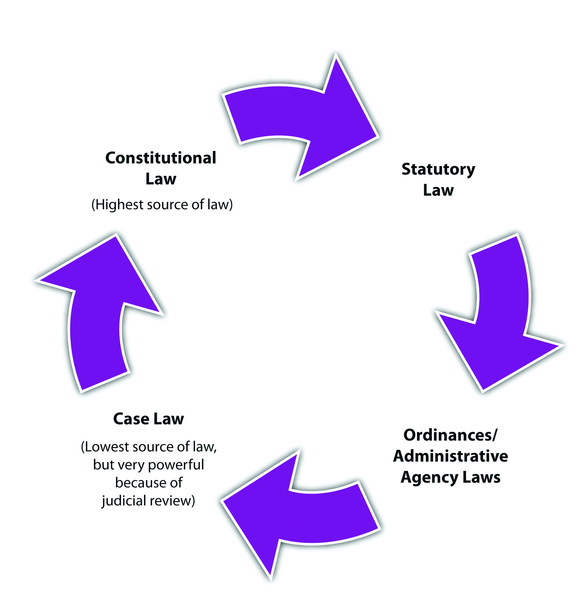
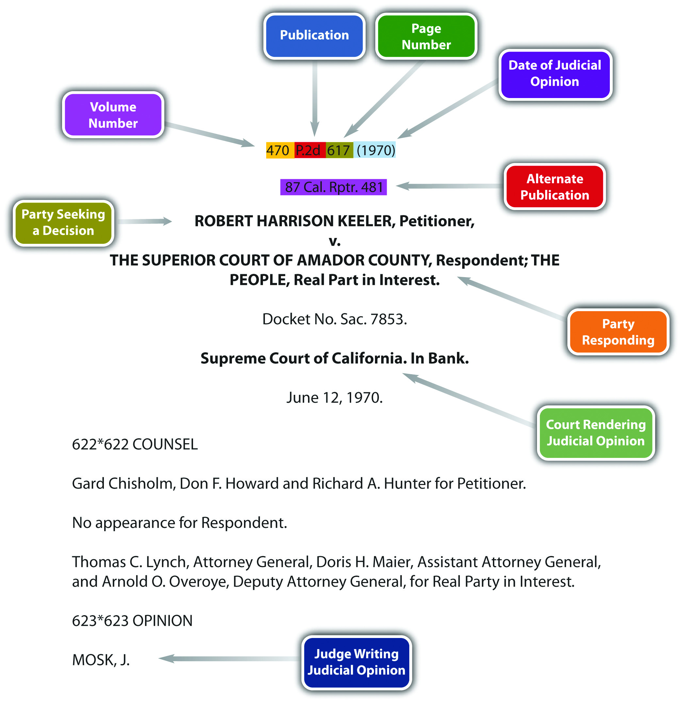
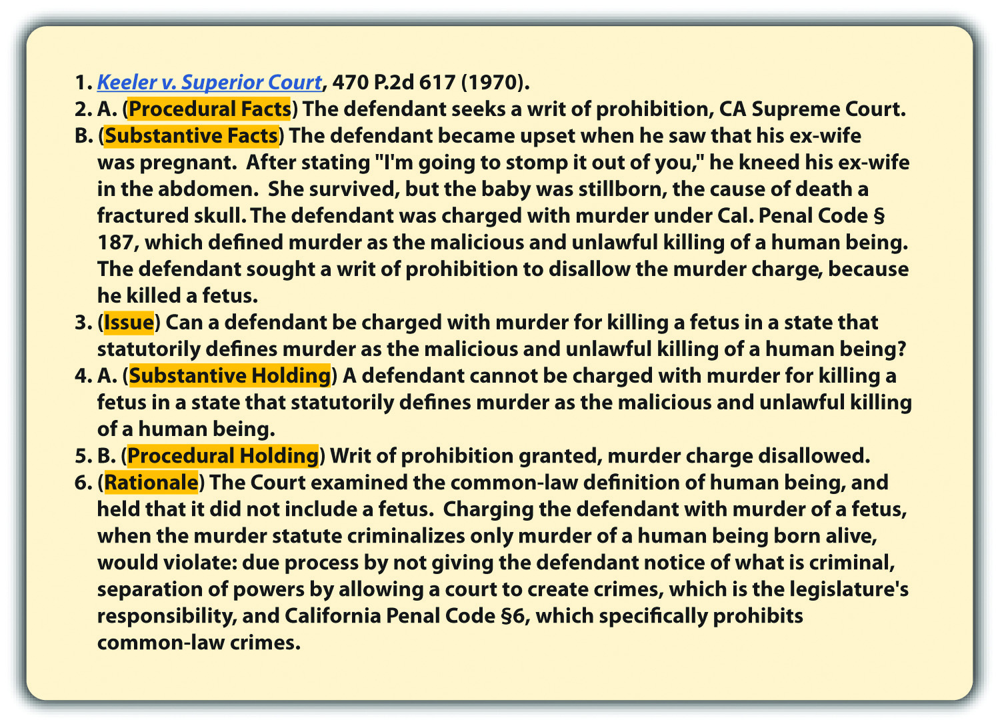
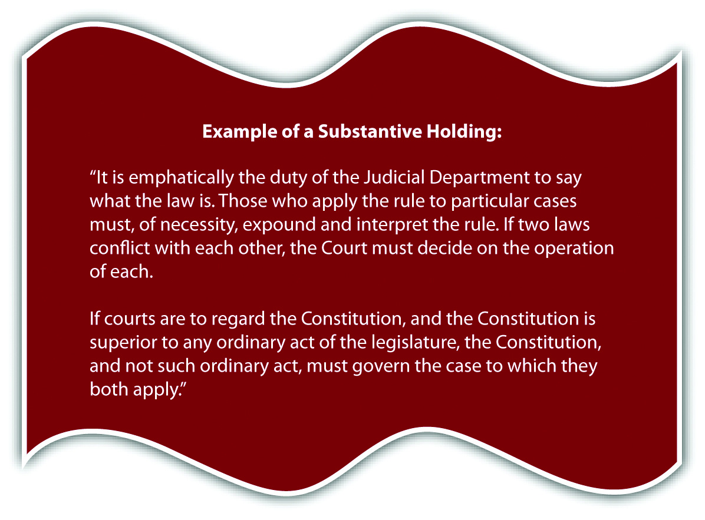

Law comes from three places, which are referred to as the sources of law.
The first source of law is constitutional law. Two constitutions are applicable in every state: the federal or US Constitution, which is in force throughout the United States of America, and the state’s constitution. The US Constitution created our legal system, as is discussed in Chapter 2 "The Legal System in the United States". States’ constitutions typically focus on issues of local concern.
The purpose of federal and state constitutions is to regulate government action. Private individuals are protected by the Constitution, but they do not have to follow it themselves.
Cora stands on a public sidewalk and criticizes President Obama’s health-care plan. Although other individuals may be annoyed by Cora’s words, the government cannot arrest or criminally prosecute Cora for her speech because the First Amendment of the US Constitution guarantees each individual the right to speak freely. On the other hand, if Cora walks into a Macy’s department store and criticizes the owner of Macy’s, Macy’s could eject Cora immediately. Macy’s and its personnel are private, not government, and they do not have to abide by the Constitution.
The federal and state constitutions are both written with words that can be subject to more than one interpretation. Thus there are many exceptions to any constitution’s protections. Constitutional protections and exceptions are discussed in detail in Chapter 3 "Constitutional Protections".
For safety and security reasons, we see more exceptions to constitutional protections in public schools and prisons. For example, public schools and prisons can mandate a certain style of dress for the purpose of ensuring safety. Technically, forcing an individual to dress a specific way could violate the right to self-expression, which the First Amendment guarantees. However, if wearing a uniform can lower gang-related conflicts in school and prevent prisoners from successfully escaping, the government can constitutionally suppress free speech in these locations.
Of the three sources of law, constitutional law is considered the highest and should not be supplanted by either of the other two sources of law. Pursuant to principles of federal supremacy, the federal or US Constitution is the most preeminent source of law, and state constitutions cannot supersede it. Federal constitutional protections and federal supremacy are discussed in Chapter 2 "The Legal System in the United States" and Chapter 3 "Constitutional Protections".
The second source of law is statutory law. While the Constitution applies to government action, statutes apply to and regulate individual or private action. A statute is a written (and published) law that can be enacted in one of two ways. Most statutes are written and voted into law by the legislative branch of government. This is simply a group of individuals elected for this purpose. The US legislative branch is called CongressThe federal legislative branch of government, responsible for enacting federal statutes., and Congress votes federal statutes into law. Every state has a legislative branch as well, called a state legislatureThe state legislative branch of government, responsible for enacting state statutes., and a state legislature votes state statutes into law. Often, states codify their criminal statutes into a penal codeState criminal statutes..
State citizens can also vote state statutes into law. Although a state legislature adopts most state statutes, citizens voting on a ballot can enact some very important statutes. For example, a majority of California’s citizens voted to enact California’s medicinal marijuana law.California Compassionate Use Act of 1996, Cal. Health and Safety Code § 11362.5, accessed February 15, 2010, http://www.cdph.ca.gov/programs/mmp/Pages/Medical%20Marijuana%20Program.aspx. California’s three-strikes law was voted into law by both the state legislature and California’s citizens and actually appears in the California Penal Code in two separate places.Brian Brown and Greg Jolivette, “A Primer: Three Strikes—The Impact after More Than a Decade,” Legislative Analyst’s Office website, accessed February 15, 2010, http://www.lao.ca.gov/2005/3_strikes/3_strikes_102005.htm.
Statutory law is inferior to constitutional law, which means that a statute cannot conflict with or attempt to supersede constitutional rights. If a conflict exists between constitutional and statutory law, the courts must resolve the conflict. Courts can invalidate unconstitutional statutes pursuant to their power of judicial review, which is discussed in an upcoming section.
Other written and published laws that apply to individuals are administrative lawsWritten, published law that an administrative agency enacts. and ordinancesWritten, published law that a city or county enacts.. Administrative laws and ordinances should not supersede or conflict with statutory law.
Administrative laws are enacted by administrative agenciesA government agency that regulates in a specific area., which are governmental agencies designed to regulate in specific areas. Administrative agencies can be federal or state and contain not only a legislative branch but also an executive (enforcement) branch and judicial (court) branch. The Food and Drug Administration (FDA) is an example of a federal administrative agency. The FDA regulates any food products or drugs produced and marketed in the United States.
Ordinances are similar to statutes, except that cities and counties vote them into law, rather than a state’s legislature or a state’s citizens. Ordinances usually relate to health, safety, or welfare, and violations of them are typically classified as infractions or misdemeanors, rather than felonies. A written law prohibiting jaywalking within a city’s or county’s limits is an example of an ordinance.
State criminal laws differ significantly, so in the early 1960s a group of legal scholars, lawyers, and judges who were members of the American Law Institute drafted a set of suggested criminal statutes called the Model Penal CodeSample criminal statutes written by legal scholars, lawyers, and judges.. The intent of the Model Penal Code was to provide a standardized set of criminal statutes that all states could adopt, thus simplifying the diversity effect of the United States’ legal system. While the Model Penal Code has not been universally adopted, a majority of the states have incorporated portions of it into their penal codes, and the Model Penal Code survives as a guideline and focal point for discussion when state legislatures modify their criminal statutes.
The third source of law is case law. When judges rule on the facts of a particular case, they create case law. Federal case law comes from federal courts, and state case law comes from state courts. Case law has its origins in English common law.
In Old England, before the settlement of the United States, case law was the most prevalent source of law. This was in contrast to countries that followed the Roman Law system, which primarily relied on written codes of conduct enacted by legislature. Case law in England was mired in tradition and local customs. Societal principles of law and equity were the guidelines when courts issued their rulings. In an effort to be consistent, English judges made it a policy to follow previous judicial decisions, thereby creating a uniform system of laws throughout the country for the first time. Case law was named common lawCase law of England that migrated to the United States. because it was common to the entire nation.Lloyd Duhaime, “Common Law Definition,” Duhaime.org website, accessed September 26, 2010, http://www.duhaime.org/LegalDictionary/C/CommonLaw.aspx.
The English system of jurisprudence made its way to the United States with the original colonists. Initially, the thirteen colonies unanimously adopted common law as the law of the land. All crimes were common-law crimes, and cases determined criminal elements, defenses, and punishment schemes. Gradually, after the Revolutionary War, hostility toward England and modern reform led to the erosion of common-law crimes and a movement toward codification. States began replacing common-law crimes with statutes enacted by state legislatures. Oxford professor Sir William Blackstone’s Commentaries on the Law of England, which interpreted and summarized English common law, became an essential reference as the nation began the process of converting common-law principles into written statutes, ordinances, and penal codes.Lloyd Duhaime, “Common Law Definition,” Duhaime.org website, accessed September 26, 2010, http://www.duhaime.org/LegalDictionary/C/CommonLaw.aspx.
In modern society, in many states and the federal government,United States v. Hudson & Goodwin, 11 U.S. 32 (1812), accessed September 24, 2010, http://openjurist.org/11/us/32/the-united-states-v-hudson-and-goodwin. judges cannot create crimes. This violates notions of fairness. Making up a new crime and punishing the defendant for it does not provide consistency or predictability to our legal system. It also violates the principle of legality, a core concept of American criminal justice embodied in this phrase: “Nullum crimen sine lege, nulla poena sine crimen” (No crime without law, no punishment without crime).
In states that do not allow common-law crimes, statutes must define criminal conduct. If no statute exists to criminalize the defendant’s behavior, the defendant cannot be criminally prosecuted, even if the behavior is abhorrent. As the Model Penal Code states, “[n]o conduct constitutes an offense unless it is a crime or violation under this Code or another statute of this State” (Model Penal Code § 1.05(1)).
The common law still plays an important role in criminal lawmaking, even though most crimes are now embodied in statutes. Classification of crimes as felonies and misdemeanors is a reflection of English common law. Legislatures often create statutes out of former common-law crimes. Judges look to the common law when defining statutory terms, establishing criminal procedure, and creating defenses to crimes. The United States is considered a common-law country. Every state except Louisiana, which is based on the French Civil Code, adopts the common law as the law of the state except where a statute provides otherwise.Legal Definition, “Common Law,” Lectlaw.com website, accessed September 26, 2010, http://www.lectlaw.com/def/c070.htm.
Read Keeler v. Superior Court, 470 P.2d 617 (1970). In Keeler, the defendant attacked his pregnant ex-wife, and her baby was thereafter stillborn. The California Supreme Court disallowed a murder charge against Keeler under California Penal Code § 187 because the statute criminalized only the malicious killing of a “human being.” The court reached its decision after examining the common-law definition of human being and determining that the definition did not include a fetus. The court reasoned that it could not create a new crime without violating the due process clause, separation of powers, and California Penal Code § 6, which prohibits the creation of common-law crimes. After the Keeler decision, the California Legislature changed Penal Code § 187 to include a fetus, excepting abortion.Cal. Penal Code § 187, accessed August 23, 2010, http://codes.lp.findlaw.com/cacode/PEN/3/1/8/1/s187.
Generally, if there is a statute on an issue, the statute is superior to case law, just as the Constitution is superior to statutory law. However, judges interpret constitutional and statutory law, making case law a powerful source of law. A judge can interpret a constitution in a way that adds or creates exceptions to its protections. A judge can also interpret a statute in a way that makes it unconstitutional and unenforceable. This is called the power of judicial reviewA court’s power to invalidate a statute as unconstitutional..Marbury v. Madison, 5 U.S. (1 Cranch) 137 (1803), accessed February 15, 2010, http://www.law.cornell.edu/supct/html/historics/USSC_CR_0005_0137_ZS.html.
An example of judicial review is set forth in Texas v. Johnson, 491 U.S. 397 (1989). In Johnson, the US Supreme Court ruled that burning a flag is protected self-expression under the First Amendment to the US Constitution. Thus the Court reversed the defendant’s conviction under a Texas statute that criminalized the desecration of a venerated object. Note how Johnson not only invalidates a state statute as being inferior to the US Constitution but also changes the US Constitution by adding flag burning to the First Amendment’s protection of speech.
Figure 1.5 Diagram and Hierarchy of the Sources of Law
Cases are diverse, and case law is not really law until the judge rules on the case, so there must be a way to ensure case law’s predictability. It would not be fair to punish someone for conduct that is not yet illegal. Thus judges adhere to a policy called stare decisisA court’s policy of following previous court decisions.. Stare decisis is derived from English common law and compels judges to follow rulings in previous cases. A previous case is called precedentA previous court decision followed in stare decisis.. Once judges have issued a ruling on a particular case, the public can be assured that the resulting precedent will continue to be followed by other judges. Stare decisis is not absolute; judges can deviate from it to update the law to conform to society’s modern expectations.
Case precedent is generally an appeal rather than a trial. There is often more than one level of appeal, so some appeals come from higher courts than others. This book discusses the court system, including the appellate courts, in Chapter 2 "The Legal System in the United States".
Many complex rules govern the use of precedent. Lawyers primarily use precedent in their arguments, rather than statutes or the Constitution, because it is so specific. With proper research, lawyers can usually find precedent that matches or comes very close to matching the facts of any particular case. In the most general sense, judges tend to follow precedent that is newer, from a high court, and from the same court system, either federal or state.
Geoffrey is a defense attorney for Conrad, who is on trial for first-degree murder. The murder prosecution is taking place in New Mexico. Geoffrey finds case precedent from a New York Court of Appeals, dated 1999, indicating that Conrad should have been prosecuted for voluntary manslaughter, not first-degree murder. Brandon, the prosecuting attorney, finds case precedent from the New Mexico Supreme Court, dated 2008, indicating that a first-degree murder prosecution is appropriate. The trial court will probably follow the precedent submitted by Brandon because it is newer, from a higher court, and from the same court system as the trial.
Cases must be published to become case law. A published case is also called a judicial opinionCase law that has been written and published.. This book exposes you to many judicial opinions that you have the option of reading on the Internet. It is essential to understand the meaning of the case citationInformation that identifies the location of a published judicial opinion.. The case citation is the series of numbers and letters after the title of the case and it denotes the case’s published location. For example, let’s analyze the case citation for Keeler v. Superior Court, 470 P.2d 617 (1970).
Figure 1.6 Keeler Case Citation
As you can see from the diagram, the number 470 is the volume number of the book that published the Keeler case. The name of that book is “P.2d” (this is an abbreviation for Pacific Reports, 2d Series). The number 617 is the page number of the Keeler case. The date (1970) is the date the California Supreme Court ruled on the case.
It is useful to condense judicial opinions into case brief formatA way to reduce a judicial opinion to its essential components.. The Keeler case brief is shown in Figure 1.7 "Keeler Case Brief".
Figure 1.7 Keeler Case Brief
Read this case at the following link: http://scholar.google.com/scholar_case?case=2140632244672927312&hl=en&as_sdt=2&as_vis=1&oi=scholarr.
Published judicial opinions are written by judges and can be lengthy. They can also contain more than one case law, depending on the number of issues addressed. Case briefs reduce a judicial opinion to its essentials and can be instrumental in understanding the most important aspects of the case. Standard case brief formats can differ, but one format that attorneys and paralegals commonly use is explained in the following paragraph.
Review the Keeler case brief. The case brief should begin with the title of the case, including the citation. The next component of the case brief should be the procedural facts. The procedural facts should include two pieces of information: who is appealing and which court the case is in. As you can see from the Keeler case brief, Keeler brought an application for a writ of prohibition, and the court is the California Supreme Court. Following the procedural facts are the substantive facts, which should be a short description of the facts that instigated the court trial and appeal. The procedural and substantive facts are followed by the issue. The issue is the question the court is examining, which is usually the grounds for appeal. The case brief should phrase the issue as a question. Cases usually have more than one issue. The case brief can state all the issues or only the issue that is most important. The substantive holding comes after the issue, is actually the case law, and answers the issue question. If more than one issue is presented in the case brief, a substantive holding should address each issue.
Figure 1.8 Example of a Substantive Holding
Marbury v. Madison, 5 U.S. (1 Cranch) 137 (1803), http://www.law.cornell.edu/supct/html/historics/USSC_CR_0005_0137_ZS.html.
A procedural holding should follow the substantive holding. The procedural holding discusses what the court did procedurally with the case. This could include reversing the lower court’s ruling, affirming the lower court’s ruling, or adjusting a sentence issued by the lower court. This book discusses court procedure in detail in Chapter 2 "The Legal System in the United States". Last, but still vital to the case brief, is the rationale. The rationale discusses the reasoning of the judges when ruling on the case. Rationales can set policy, which is not technically case law but can still be used as precedent in certain instances.
One judge writes the judicial opinion. Judges vote how to rule, and not all cases are supported by a unanimous ruling. Occasionally, other judges will want to add to the judicial opinion. If a judge agrees with the judicial opinion, the judge could write a concurring opinion, which explains why the judge agrees. If a judge disagrees with the judicial opinion, the judge could write a dissenting opinion explaining why the judge disagrees. The dissenting opinion will not change the judicial opinion, but it may also be used as precedent in a future case if there are grounds for changing the law.
The components of a case brief are the following:
Answer the following questions. Check your answers using the answer key at the end of the chapter.